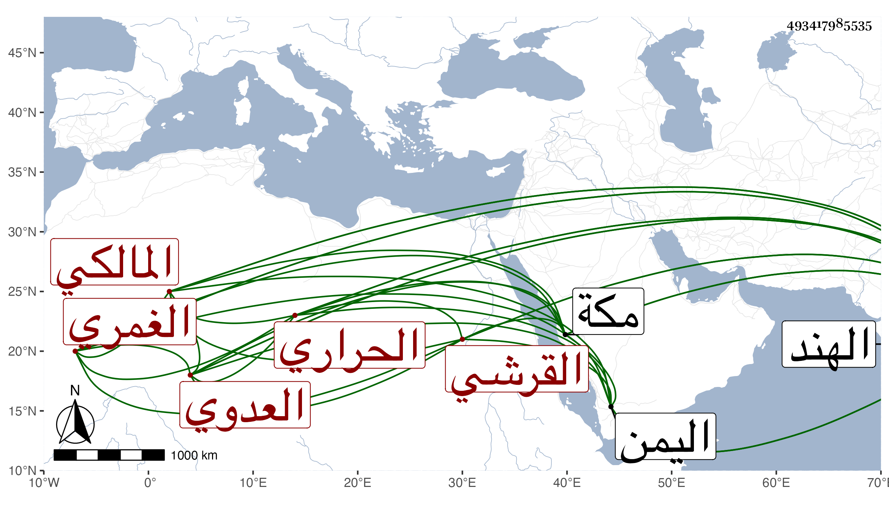

0902Sakhawi.DawLamic.ITO20230111-ara1.EIS1600.493417985535
Biography ID: 493417985535
213
محمد بن عبد الله بن محمد بن أحمد بن قاسم بن عبد الرحمن بن أبي بكر التقي أبو الفضل بن العفيف بن التقي القرشي العدوي الغمري الحراري المالكي . قال الفاسي حضر على عمه فيما أحسب وسمع من ابن صديق وغيره وعني بالعلم فتنبه ودخل اليمن والهند طلبا للرزق فأدركه أجله بكلبرجة ببلاد الهند في سنة عشر عن نيف وثلاثين سنة ووصل نعيه لمكة في سنة أربع عشرة .
